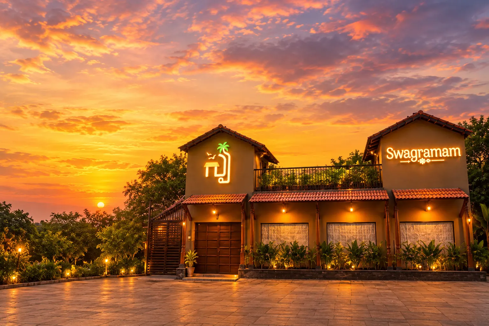

A farming family
Ramana grows up in a farming family where quality and hygiene come first.
About Swagramam
Swagramam brings the warmth of a Telugu village to the heart of Vijayawada, through food, hospitality and traditions made to be shared.
Discover our story ↓

Our story
Our story didn't begin in a restaurant kitchen. It began in the backyard of a farmer's home, where our founder Ramana grew up in a farming family that valued quality and care.
That upbringing taught us that good food starts with honest ingredients and clean, careful hands. Swagramam is our return to the village table, cooking the native dishes we grew up on.
Every brand has a story, and ours didn't begin in a restaurant kitchen — it began in the backyard of a farmer's home.
Born into a farming family, our founder Ramana pursued Mechanical Engineering at SIT Tumkur and began his career at the Vijayawada Thermal Power Station, followed by a stint in finance. But an entrepreneur's instinct kept calling, guided by one simple philosophy: quality products, with uncompromising standards of hygiene.
That same philosophy is behind every dish at Swagramam: honest ingredients, careful hands and the native recipes we grew up on.
Now, Ramana's sons, Satya Prakash and Sai Prakash, carry that vision forward, with the same passion, consistency and quality that built the family's name.
Every long journey eventually turns toward home. We went back to where it all began, the village table, to cook the native dishes we grew up on. Swagramam is our thank-you to the people who believed in us: a new beginning built on old flavours, imparting the heritage of South India, one meal at a time, where every meal tells a story of our roots.
Every great story has a next chapter.
Swagramam · Vijayawada
Ours begins in a village.
Ramana grows up in a farming family where quality and hygiene come first.
Mechanical Engineering at SIT Tumkur, then the Vijayawada Thermal Power Station.
The native dishes we grew up on, brought home to Vijayawada.
Back to our roots, with Ramana's sons carrying the family forward.
From our wall
Before there was a restaurant, there was a letter.
On 21 December 1982, our founder Ramana’s mother wrote to him at his college hostel in Tumkur. It is full of the small, loving things a mother writes to a son living far from home, and it still reminds us why we cook the way we do.
Today it hangs on the wall at Swagramam, where every guest can see it. It is the heart of how we welcome people: like family.
Our foundation
Swagramam is inspired by the flavours, rituals and hospitality of Andhra and Telangana, in a setting designed to feel familiar, generous and welcoming.
What we stand for
Our vision: to be the village that feels like home, with authentic Telugu cuisine, traditional culture and heartfelt hospitality.
A village setting made for long, easy meals.
Real Andhra flavours, cooked with love.
Heartfelt hospitality at every table.
Cultural evenings, village walks and cooking sessions.
Our promise
At Swagramam, we promise not just good food, but an experience — one that brings people together, celebrates tradition and leaves you with the warmth of a village home.
Experience Swagramam →Our specialties
From traditional recipes to unique village-style flavours, our food brings the true taste of Andhra to your plate.
See the food, people and moments that make our table special. Follow @swagramam_
 Tradition · Nature · Together
Tradition · Nature · TogetherDine-in and takeaway. Lunch 12–4:30 pm (Mon till 4 pm), dinner 7–11:30 pm, every day.
Mogalrajapuram, Sidhartha Nagar, Labbipet, Vijayawada 520010
076598 58999
Private catering: 098499 82052

We use cookies to understand how our site is used. See our Privacy Policy.